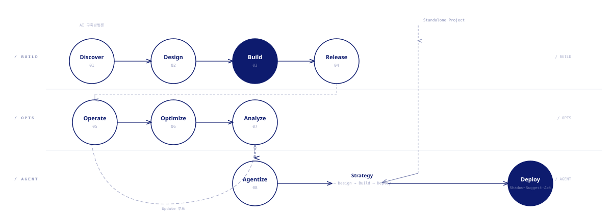
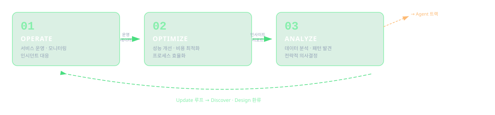
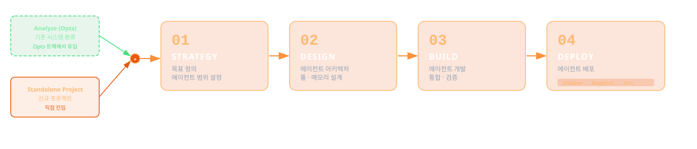

01
Discover
- 목적
- 만들 시스템이 무엇을 해결해야 하는지 정의
- 주요 활동
- 환경 분석, 이해관계자 인터뷰, 사용자 리서치, 요구사항 정의, KPI 수립
- AI 활용
- 인터뷰 요약, 시장·경쟁 리서치, 요구사항 분류·우선순위화
- 산출물
- 비즈니스 요구 정의서, 페르소나, 요구사항 리스트, KPI
// GROVI Methodology
AI로 더 빠르게, 방법론으로 더 단단하게.
그로브의 AI 기반 구축·운영·에이전트 방법론.
// 01. Framework
GROVI는 시스템의 요구 정의부터 개발, 테스트, 운영, 고도화에 이르는 전 주기를 AI 기반으로 실행·관리하는 방법론입니다. 7개의 스테이지를 Build·Opts·Agent 3개 트랙으로 묶고, Analyze에서 Discover·Design으로 되돌아오는 Update 루프와, Agent 트랙은 Analyze 환류 또는 단독 프로젝트로 진입할 수 있습니다.

// 02. Build Track
Build 트랙은 시스템을 0에서 1로 만드는 전 과정을 담당합니다. 요구 정의(Discover), 분석·설계(Design), 개발(Build), 테스트·배포(Release) 4개 단계를 AI 코딩 에이전트와 평가 하네스로 가속합니다.
// Build — 단계별 상세
// 03. Opts Track
Opts 트랙은 배포된 시스템을 안정적으로 운영하고 지속적으로 개선합니다. 운영(Operate), 개선(Optimize), 분석(Analyze)을 거치며, Analyze에서 도출된 인사이트는 Update 루프를 통해 Discover·Design 단계로 환류됩니다.

// Opts — 단계별 상세
// 04. Agent Track
Agent 트랙은 자율 에이전트의 개발과 운영을 담당합니다. Opts 트랙의 Analyze에서 기존 시스템을 에이전트화하거나, 처음부터 단독 프로젝트로 에이전트를 개발합니다. Strategy, Design, Build, Deploy 4단계를 거칩니다.

// Agent — 단계별 상세